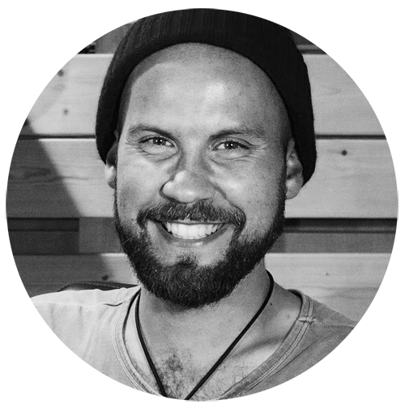

Об авторе
Привет!Меня зовут Олег Иванов и я автор этого блога. Мы с моей командой делаем путеводители по разным странам, основанные на личном опыте. На текущий момент я живу на 2 страны (Москва и Тенерифе), и постоянно перемещаюсь по разным странам.
Я всю жизнь хотел увидеть мир и при каждом удобном случае старался всегда куда-нибудь выбраться путешествовать. Но мне всегда катастрофически не хватало стандартного 4-х недельного отпуска в году, чтобы вдоволь наездиться. Особенно трудно было со спонтанными поездками без обратного билета, то есть с моим любимым форматом путешествий. Поэтому в 2010 году я уволился, начал путешествовать и составлять свои путеводители, которые помогают новичкам попробовать начать путешествовать, а самостоятельным путешественникам организовать свои поездки.
У меня нет цели объездить все страны в мире и я не хочу понтоваться количеством посещенных стран. Именно поэтому я могу ездить в одни и те же места десятки раз (например, Таиланд или Прага). Мне более интересно узнавать, каково пожить в той или иной стране/городе, чем ездить в формате «галопом по Европам» с просмотром сотней достопримечательностей за одну неделю. На текущий момент, я длительно жил в Таиланде (Самуи, Пхукет, Бангкок, Чиангмай, Хуа Хин), в Польше в Варшаве, в Китае на острове Хайнань, в Израиле в Хайфе, в России в Москве и Сочи, в Испании на Тенерифе. Как раз долгое пребывание в том или ином городе (стране) позволяет узнать их лучше, погулять и осмотреть различные места, посетить кафе и рестораны без спешки. Это очень помогает понять страну и её особенности.
Помимо всего прочего, я думаю, что очень важно стремиться к своим мечтам, какими бы они сложными не казались. И я верю, что все реально! Конечно, есть очень разные жизненные ситуации, но пытаться все равно стоит. И нет смысла ждать идеальных условий, когда все сложится само собой. Очень надеюсь, что на страницах моего блога вы найдете мотивацию и вдохновение, чтобы начать путешествовать, начать открывать себя с других сторон и найдете тот жизненный путь, который вам ближе всего. Прогуляйтесь по постам в Личном блоге.